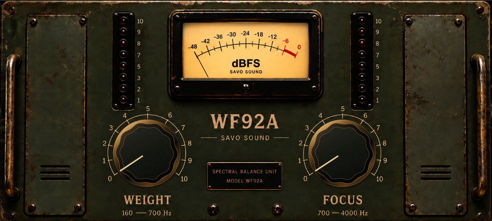

WF92A is an adaptive resonance processor designed to reduce unwanted build-up while preserving the musical structure around it.
Rather than applying a fixed EQ curve, WF92A continuously analyses the signal for local spectral peaks and responds dynamically when energy begins to stand out from the surrounding spectrum. The processing is divided between two overlapping areas: WEIGHT, covering low-mid body and build-up, and FOCUS, covering the midrange and presence region.
The detection is designed to distinguish unwanted resonant emphasis from intentional tonal structure. Harmonic relationships and strongly tonal material are taken into account before reduction is applied, helping the processor leave notes, timbre and useful spectral character intact while controlling frequencies that protrude unnaturally.
Resonance reduction can naturally remove some energy from the affected area. WF92A therefore includes a program-dependent density stage after the cleanup. Instead of simply restoring level, it rebuilds controlled energy from the processed signal while protecting the added body from the resonances that were just reduced. Transients are treated separately so that additional density does not simply flatten the front of the signal.
WEIGHT extends this idea further by allowing the reconstructed body to become progressively denser as the control is increased, while an adaptive source-referenced system keeps the added energy within the dynamic frame established by the original signal.
WF92A is designed as a simple two-control approach to resonance management: remove energy that is getting in the way, preserve the structure that belongs there, and retain useful body after the cleanup.
Unzip the downloaded file and copy WF92A.vst3 to:
~/Library/Audio/Plug-Ins/VST3/Restart your DAW and rescan your plugins if necessary.
DOWNLOADUnzip the downloaded file and copy WF92A.vst3 to:
C:\Program Files\Common Files\VST3\Restart your DAW and rescan your plugins if necessary.
DOWNLOAD